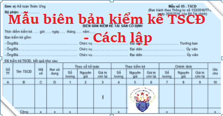

Hướng dẫn cách lập Biên bản kiểm kê TSCĐ theo Thông tư 133 và 200 - Mẫu 05-TSCĐ, Biên bản kiểm kê tài sản cố định nhằm xác nhận số lượng, giá trị tài sản cố định hiện có, thừa thiếu so với số kế toán trên cơ sở đó tăng cường quản lý tài sản cố định và làm cơ sở quy trách nhiệm vật chất, ghi sổ kế toán số chênh lệch.
I. Mẫu biên bản kiểm kê TSCĐ:
|
Đơn vị: Kế toán Diệu Tâm Bộ phận: ……………… |
Mẫu số 05 - TSCĐ (Ban hành theo Thông tư số 133/2016/TT-BTC ngày 26/8/2016 của Bộ Tài chính) |
BIÊN BẢN KIỂM KÊ TÀI SẢN CỐ ĐỊNH
Thời điểm kiểm kê…… giờ…… ngày 15 tháng 09 năm 2026
Ban kiểm kê gồm:- Ông/Bà……………….. Chức vụ…………….. Đại diện………..….. Trưởng ban
- Ông/Bà……………..….. Chức vụ…………….. Đại diện…………….. Ủy viên
- Ông/Bà……………..….. Chức vụ…………….. Đại diện…………...... Ủy viên
Đã kiểm kê TSCĐ, kết quả như sau:
| Số TT | Tên TSCĐ | Mã số | Nơi sử dụng | Theo sổ kế toán | Theo kiểm kê | Chênh lệch | Ghi chú | ||||||
| Số lượng | Nguyên giá | Giá trị còn lại | Số lượng | Nguyên giá | Giá trị còn lại | Số lượng | Nguyên giá | Giá trị còn lại | |||||
| A | B | C | D | 1 | 2 | 3 | 4 | 5 | 6 | 7 | 8 | 9 | 10 |
|
|
|||||||||||||
| Cộng | x | x | x | x | x | x | |||||||
|
Giám đốc
(Ghi ý kiến giải quyết số chênh lệch) (Ký, họ tên, đóng dấu) |
Kế toán trưởng (Ký, họ tên) |
Ngày 15 tháng 09 năm 2026 Trưởng Ban kiểm kê (Ký, họ tên) |
II. Cách lập BIÊN BẢN KIỂM KÊ TÀI SẢN CỐ ĐỊNH
1. Mục đích:
- Biên bản kiểm kê tài sản cố định nhằm xác nhận số lượng, giá trị tài sản cố định hiện có, thừa thiếu so với số kế toán trên cơ sở đó tăng cường quản lý tài sản cố định và làm cơ sở quy trách nhiệm vật chất, ghi sổ kế toán số chênh lệch.
2. Phương pháp và trách nhiệm ghi
Góc trên bên trái của Biên bản Kiểm kê TSCĐ ghi rõ tên đơn vị (hoặc đóng dấu đơn vị), bộ phận sử dụng. Việc kiểm kê tài sản cố định được thực hiện theo quy định của pháp luật và theo yêu cầu của đơn vị. Khi tiến hành kiểm kê phải lập Ban kiểm kê, trong đó kế toán theo dõi tài sản cố định là thành viên.
Biên bản kiểm kê TSCĐ phải ghi rõ thời điểm kiểm kê: (... giờ ... ngày 15 tháng 09 năm 2026).
Khi tiến hành kiểm kê phải tiến hành kiểm kê theo từng đối tượng ghi tài sản cố định.
Dòng “Theo sổ kế toán” căn cứ vào sổ kế toán TSCĐ phải ghi cả 3 chỉ tiêu: Số lượng, nguyên giá, giá trị còn lại vào cột 1, 2, 3.
Dòng “Theo kiểm kê” căn cứ vào kết quả kiểm kê thực tế để ghi theo từng đối tượng TSCĐ, phải ghi cả 3 chỉ tiêu: số lượng, nguyên giá, giá trị còn lại vào cột 4, 5, 6.
Dòng “Chênh lệch” ghi số chênh lệch thừa hoặc thiếu theo 3 chỉ tiêu: Số lượng, nguyên giá, giá trị còn lại vào cột 7, 8, 9.
Trên Biên bản kiểm kê TSCĐ cần phải xác định và ghi rõ nguyên nhân gây ra thừa hoặc thiếu TSCĐ, có ý kiến nhận xét và kiến nghị của Ban kiểm kê. Biên bản kiểm kê TSCĐ phải có chữ ký (ghi rõ họ tên) của Trưởng ban kiểm kê, chữ ký soát xét của kế toán trưởng và giám đốc doanh nghiệp duyệt. Mọi khoản chênh lệch về TSCĐ của đơn vị đều phải báo cáo giám đốc doanh nghiệp xem xét.
Xem thêm: Mẫu biên bản đánh giá lại TSCĐ
----------------------------------------------------------------
----------------------------------------------------------------
